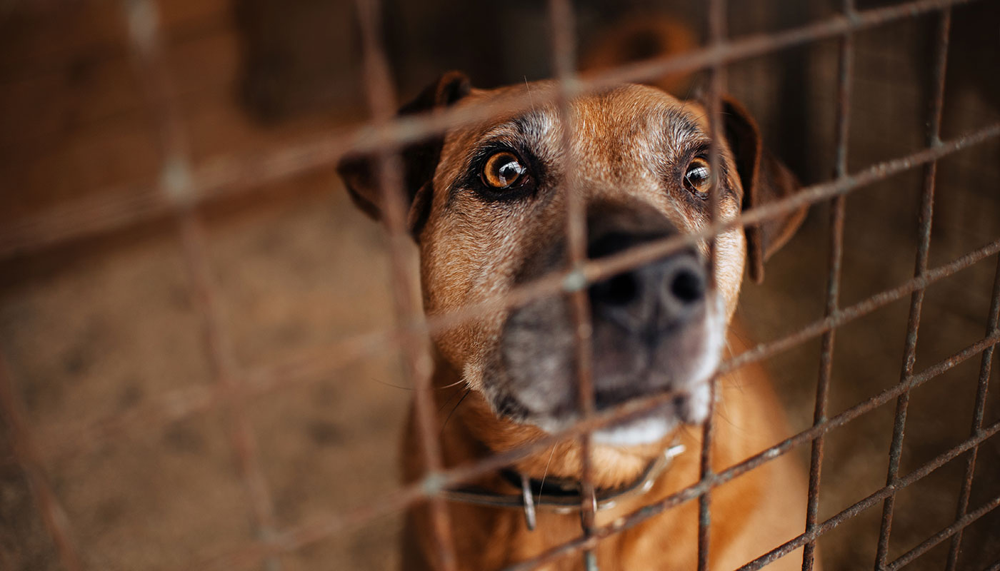

Les causes de l'abandon
La plupart des abandons sont souvent dus à une adoption sur un coup de tête. Effectivement, une importante partie des gens ne réalisent pas l'engagement qu'est l'adoption d'un animal. Mais un changement de situation personnelle ou professionnelle (divorce, mutation, ...) peut aussi engendrer l'abandon. En dehors de ces raisons, il y a des causes plus tragiques comme l'hospitalisation, voire la mort du maître et la famille de ce dernier, ne voulant pas de l'animal, le délaisse ou le dépose dans un refuge. D'autres propriétaires se retrouvent quelques fois avec des frais véterinaires trop élevés ou considèrent tout simplement l'animal trop vieux et s'en débarassent.

De plus, dans le cas d'un chien, certains manquent à l'éducation du chiot. Il pourra donc devenir plus tard un adulte déséquilibré ou réactif et sera considéré comme trop dangereux par son propriétaire, qui l'abandonnera dans la plupart des cas.

Maintenant que nous nous sommes penchés sur les causes, voici la partie psychologique des conséquences de l'abandon.
Retour à la page d'accueil